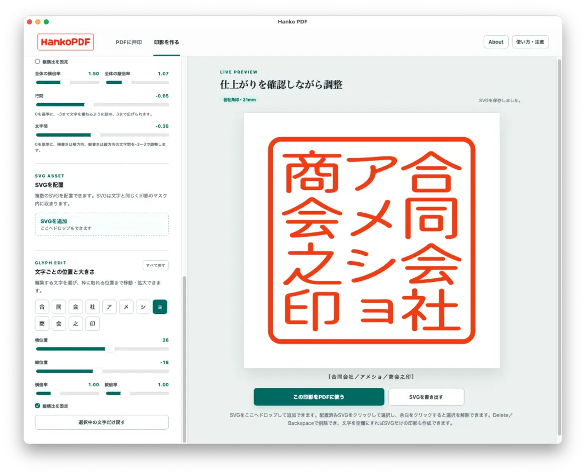
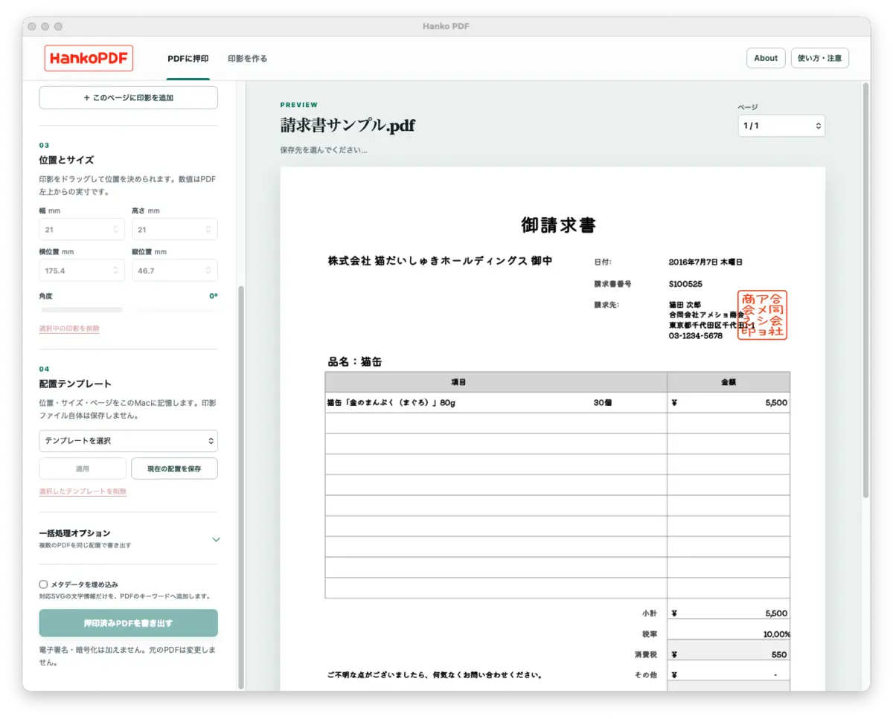

印刷、押印、スキャン
プリンタの機嫌、朱肉の濃さ、スキャナの傾き。小さな書類に小さくない手間。
【フリーウェア】PDF押印の小さな時短係
PDFにハンコを押して、素早く保存。
オリジナルハンコ作成機能付き。
請求書を印刷して、ハンコを押して、スキャンして、ファイル名で少し迷う。あの一連の儀式を、さっと終わらせるためのユーティリティです。
電子署名でも承認システムでもありません。
デジタル押印を、ラク〜にやりとげるツールです。
PAPERLESS, MOSTLY
個人事業主や小さな会社の書類仕事にある「そこだけ紙？」な瞬間へ。大げさなワークフローはありません。PDFを開いて、ハンコを押して、別名保存。それだけです。
プリンタの機嫌、朱肉の濃さ、スキャナの傾き。小さな書類に小さくない手間。
実寸の印影を押し、mm単位で位置とサイズを調整。元PDFはそのまま残します。
請求書や申請書をそのまま送れる形へ。紙の出番は、今日は休暇です。
2 STEPS ONLY
印影を作ったら、PDFを押して保存。多機能を名乗るより、押印作業の「ここが面倒」をサポートします。
個人丸印、会社認印、会社角印、長方形スタンプをSVGとして作成できます。文字や画像を組み合わせて、枠の太さやカラー、余白を整えます。
「まずは、いつも使うハンコを作成！」
* ご自身で予め用意した画像も使えます。正式な社判などは画像データ納品に対応した印章店へのご発注をオススメします。


PDFを見ながらハンコを押し、幅、高さ、位置、角度をmm単位で調整。押印済みPDFを別ファイルとして保存します。
「この位置ですね。ぽんと押して保存です！」


SAMPLES
サンプルPDFへ押印した画面です。大事なのは、これ以上すごいことをしていないところ。見た目のハンコが欲しいときに、見た目のハンコを押します。
STAMP PARADE
お手持ちのフォントとSVG画像で、楽しいハンコ画像を作りましょう。
実用寄りからネタ用まで、アイデア次第で楽しく印影をデザインできます。
HONEST SPEC
便利そうな名前ですが、できないこともはっきりしています。
残念ながら、すごいシステムではありません。
FREEWARE FOR MAC
Hanko PDFは、PDFへハンコを押して保存するためのフリーウェアです。
ソースコードもGitHubで公開しています。Windows版もまもなくリリース予定。
Hanko PDFは無料で公開しています。役に立ったと感じたら、今後の開発・保守への任意のご支援をいただけるとうれしいです。支援の有無で、アプリの機能や利用条件は変わりません。
Stripeで開発を支援するStripeの決済ページが新しいタブで開きます。